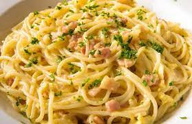

Real, Italian carbonara!

Description
Carbonara, taking its origin from Lazio region, is one of the simplest and tastiest dish ever. It is said that it was made by american troops in Rome, using the ingredients they had.
Learn how to make a proper carbonara without breaking a sweat!